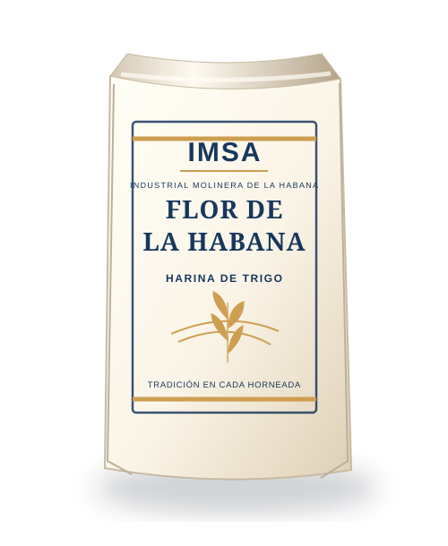
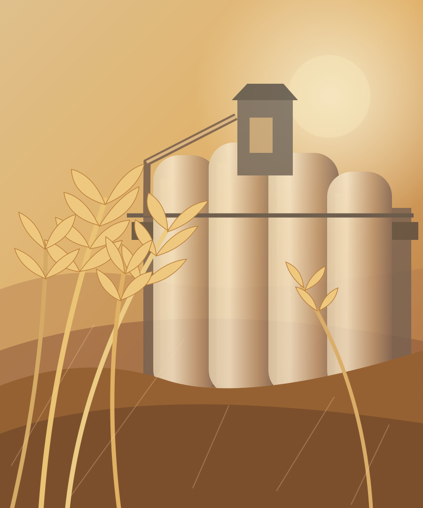
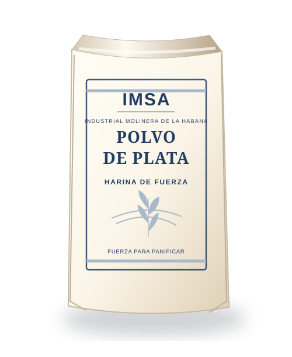
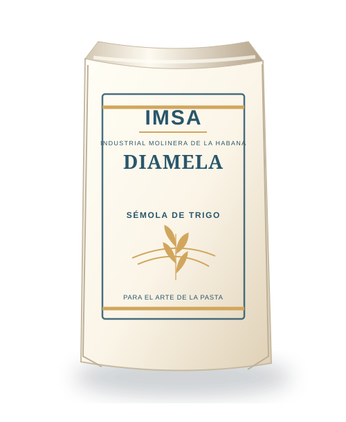
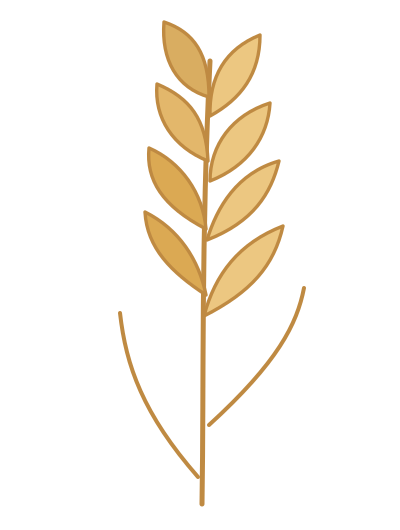

01 / 07

Harina de trigo
Flor de La Habana
Harina de media fuerza, versátil para panificación, galletas y repostería.
1 · 5 · 10 · 50 kg
Harinas, premezclas y sémola de trigo elaboradas en La Habana. Una historia de dedicación detrás de cada receta, cada pan y cada mesa.
Comienzo de las
operaciones productivas
Una empresa de capital
mixto cubano-mexicano

Soluciones de molienda para distintos usos, desde la panificación cotidiana hasta la producción de pastas alimenticias.

Harina de media fuerza, versátil para panificación, galletas y repostería.

Pensada para elaborar panes que requieren buen desarrollo de la masa.

Sémola de trigo para la producción de pastas alimenticias.

Industrial Molinera de La Habana S.A. nació de la alianza entre entidades cubanas y mexicanas. Desde nuestras primeras moliendas en 2003, trabajamos para acompañar la alimentación de nuestro país.
Una visión de la molinería en la que tecnología, experiencia y mejora continua acompañan todo el proceso.
El grano llega a la instalación para su almacenamiento y posterior procesamiento.
La transformación del trigo permite obtener harinas y sémolas para diferentes usos.
La gestión de calidad e inocuidad forma parte del trabajo productivo.
Productos en distintos formatos destinados a clientes industriales y al hogar.
La protección del entorno, la seguridad de los trabajadores y el aprovechamiento responsable de los recursos son parte de la forma en que entendemos nuestra actividad industrial.
Nuestro compromiso ↗Desde una pizza compartida hasta el pan de cada día: pequeñas inspiraciones que comienzan con harina.
Una buena base para compartir los sabores que más te gustan.
Ver inspiración ↗El placer del pan recién hecho, dorado y de corteza crujiente.
Ver inspiración ↗Una idea sencilla para desayunos, meriendas y reuniones.
Ver inspiración ↗